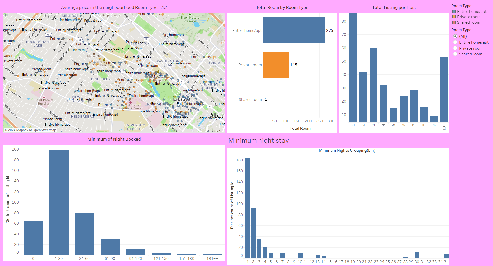
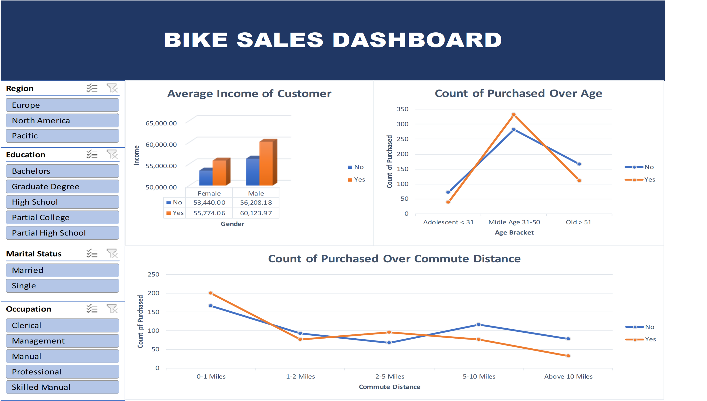
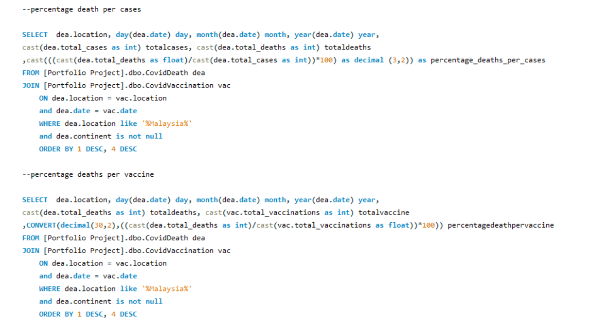
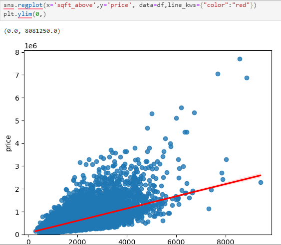

Power BI

This dashboard, Data Professional Survey Breakdown was designed in Power BI using survey data
collected by YouTuber Alex The Analyst. It provides a concise overview of key insights,
such as programming language preferences, salary satisfaction, work-life balance,
and the challenges faced by data professionals in entering the field.
The data reveals Python as the most popular programming language, moderate levels of salary and work-life balance
satisfaction, and diverse experiences in breaking into the data industry. This dashboard serves as a quick
reference for understanding trends and challenges among data professionals, inspired by Alex The Analyst's survey
initiative.
Tableau

This dashboard, created in Tableau using Airbnb listings data in New York from Kaggle,
offers an engaging and insightful overview for anyone exploring rental options. It visualizes critical information
such as the average price of rooms across neighborhoods, the distribution of room types, the total listings per host,
and the minimum nights required for booking. The interactive map highlights neighborhood hotspots, while charts provide clarity on customer preferences
and booking patterns. This dashboard serves as a valuable tool for identifying the best Airbnb options,
offering renters an efficient way to find accommodations tailored to their needs.
Excel

This dashboard, created in Excel using bike sales data from Kaggle, provides a comprehensive
analysis of customer purchasing behavior. It highlights key insights such as the average income of customers segmented
by gender and purchase status, purchasing trends across different age brackets, and the impact of commute distance on
bike purchases. With interactive filters for region, education level, marital status, and occupation,
this dashboard enables targeted analysis, making it an essential tool for identifying and understanding the
ideal customer profile. It offers a quick and effective way to strategize marketing efforts and maximize sales
opportunities.
MySQL

This MySQL query, crafted using COVID-19 data from Kaggle, provides critical insights into the
pandemic through both Exploratory Data Analysis (EDA) and advanced calculations. By analyzing trends and patterns in
the data, it evaluates fatality rates with the total percentage of deaths per case, assesses the impact of vaccination
efforts through the total percentage of deaths per vaccination, and gauges global vaccine coverage with the
total percentage of vaccinations per population. This combination of EDA and analytical precision serves as a
powerful tool for understanding the pandemic’s dynamics and guiding data-driven public health decisions.
Python

This regression graph, plotted using data on house sale prices in King County sourced from Kaggle,
highlights the relationship between a house's price (Y-axis) and its square footage excluding the basement (X-axis).
Created with Python's Seaborn library, the graph provides a clear visual representation of how square footage influences
property prices. By showcasing trends and patterns, it serves as a valuable reference for understanding how size impacts
market value, offering insights for buyers, sellers, and real estate analysts alike.


.jpg)